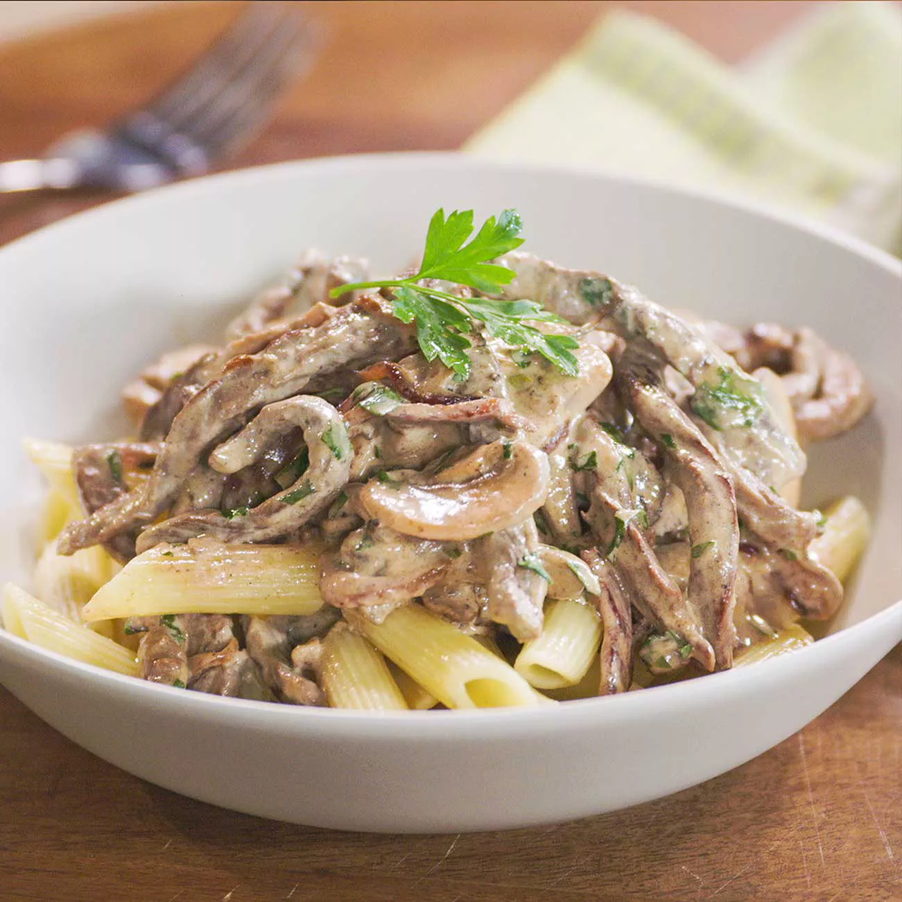
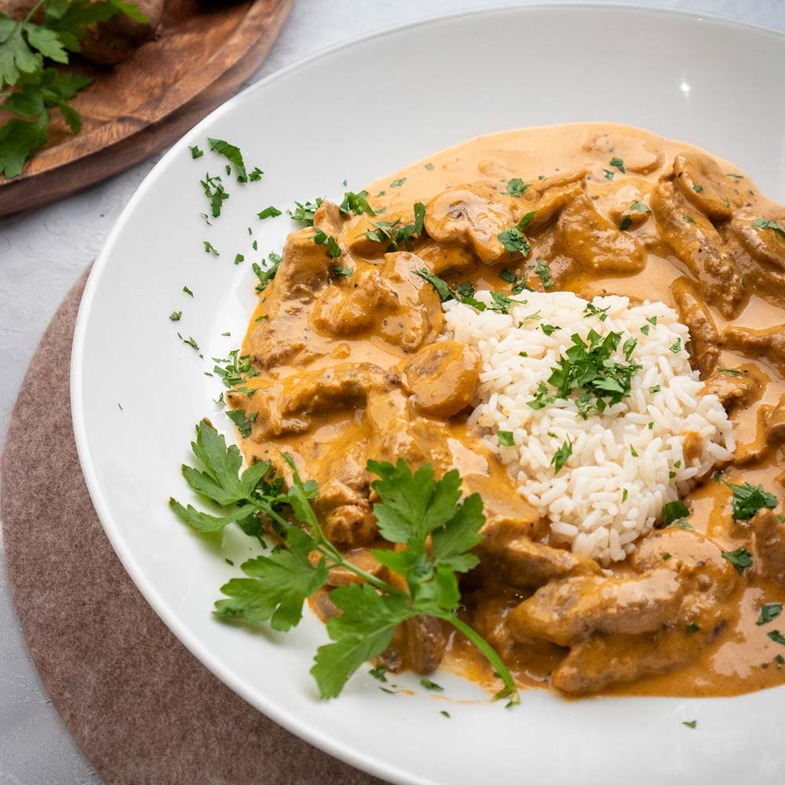
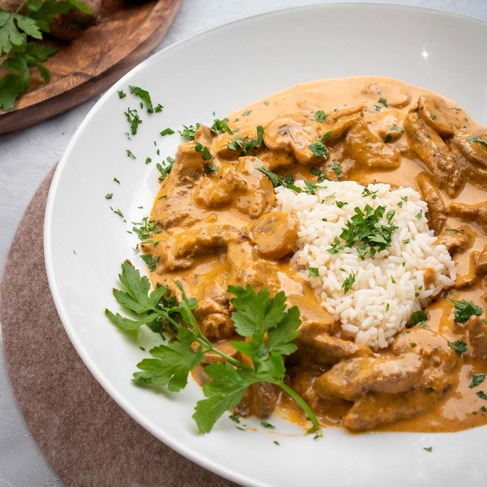
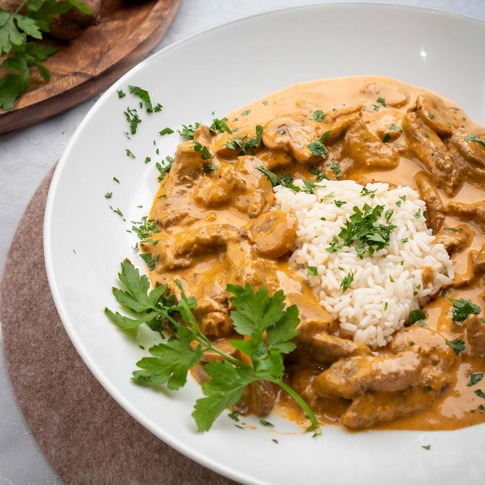

About Us
Welcome to the Beef Stroganoff Enthusiast's page! We're passionate about all things Stroganoff and love sharing our recipes, tips, and experiences with fellow enthusiasts. Our community celebrates the rich history and delicious variations of this classic dish.
Recipe
Classic Beef Stroganoff
Ingredients:
- 600g beef rump steak, sliced thinly
- 1 onion, sliced
- 300g mushrooms, sliced
- 2 tbsp tomato paste
- 1 cup beef stock
- 1/2 cup sour cream
- Salt and pepper to taste
Instructions:
- Brown the beef in a pan, then set aside.
- Sauté onions and mushrooms in the same pan.
- Add tomato paste and beef stock, simmer for 10 minutes.
- Return beef to the pan, add sour cream, and heat through.
- Season with salt and pepper, serve over noodles.
Image Gallery

 

